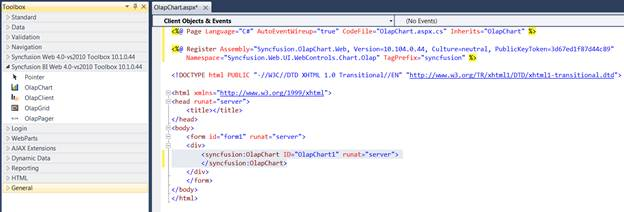
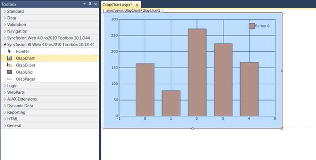
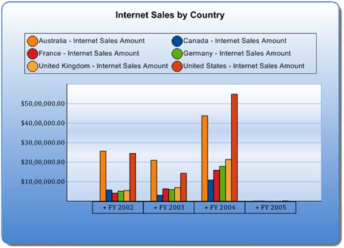

To create an OLAP Chart for web:
1. Click Start > All Programs > Microsoft Visual Studio 2010.
2. Create a new ASP.NET Web Site.
3. Drag the OlapChart control from the Syncfusion BI Web Toolbox onto the Design page.

Figure 5: OLAP Chart control in Source Page

Figure 6: OLAP Chart control in Design Page
4. Add the following namespaces in the code-behind:
· Syncfusion.Web.UI.WebControls.Chart.Olap
· Syncfusion.Olap.Manager
· Syncfusion.Olap.Reports
· Syncfusion.Olap.DataProvider
To bind the OlapChart control with cube data, initiate the OlapDataManager using the methods provided in the following link.
Methods for instantiating OlapDataManager
2. After instantiating the OlapDataManager, create an OlapReport and add it to the OlapDataManager either through the SetCurrentReport(OlapReport) method or by the CurrentReport property.
3. Now the OlapReport is assigned to the OlapChart control’s OlapDataManager and the DataBind() method is called to render the OLAP Chart with the current report information.
The OlapDataManager can be bound to the OlapChart using the following code:
|
DataManager.SetCurrentReport(this.CreateReport()); this.olapChart1.OlapDataManager = DataManager; this.olapChart1.DataBind(); |
|
[VB] DataManager.SetCurrentReport(Me.CreateReport()) Me.olapChart1.OlapDataManager = DataManager Me.olapChart1.DataBind() |
Also, click here for more sample reports. OLAP Chart control uses HttpHandler by default to procure the images of chart, label and legend each time. Therefore, it’s required to include the handler in the httphandlers section of web.config file.
|
[Web.Config] <httpHandlers> ..... <add path="syncfusion_generate.ashx" verb="*" type="Syncfusion.Web.UI.WebControls.Chart.ChartWebHandler,Syncfusion.Chart.Web, Version=x.x.x.x, Culture=neutral, PublicKeyToken=3d67ed1f87d44c89"/> </httpHandlers> |
 Note: x.x.x.x in the above code snippet refers to
the current version of Essential Studio running in your system.
Note: x.x.x.x in the above code snippet refers to
the current version of Essential Studio running in your system.
Run the application. The following output is generated.

Figure 7: Chart displaying OLAP Data